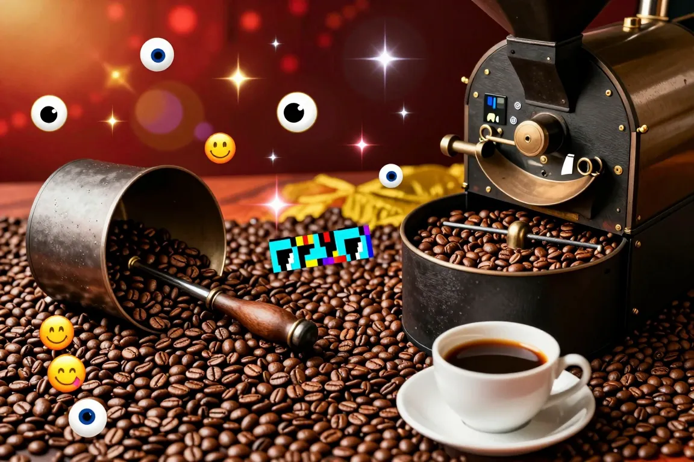

Картинка-мем, прогнанная через множество кругов сохранения, повышения резкости и усиления цвета, пока на ней не проступят тяжёлые блоки JPEG, выжженные красные и жёлтые, блики объектива и светящиеся эмодзи. Распространилась на Reddit и Tumblr в 2017 году.

Главная идея
Покажите порчу как шутку: картинка так скопирована и усилена, что её собственный распад и есть стиль.
Принципы дизайна
Пережимайте изображение в JPEG с качеством 5–15, 3–10 раз, с изменением размера на 50% и 200% между кругами.
Поднимайте насыщенность на 150–300% и контраст на 40–80%, пока красные не выгорят.
Усиливайте резкость на 150%, чтобы вокруг каждого края проступал шум.
Добавляйте блик объектива, светящиеся глаза или лазерный блик красным (#FF1A1A) и жёлтым (#FFE000).
Добавляйте эмодзи смеха со слезами или 100 на 10–20% холста и подпись прописными в духе Impact с контуром.
Добавляйте внешнее свечение 2–4px оранжевым на тексте.
Сохраняйте читаемость объекта: лицо или предмет остаётся узнаваемым при 25% размера.